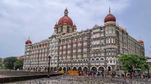

Travel Blog
My Travel Journey This travel blog describes the tourist places I have
visited in chrono-logical order. Each journey gave me new experiences and
helped me learn about different places and cultures.
Ooty
Ooty was the first tourist place I visited. The climate was cool and
pleasant, and the natural scenery was very beautiful. I enjoyed the
greenery, gardens, and peaceful surroundings, which made the trip refreshing
and memorable.
Delhi
After Ooty, I visited Delhi, the capital city of India. The city is rich in
history and culture. Visiting historical monuments helped me learn more
about India’s past, while the busy city life showed the modern side of the
country.
Mumbai

Next, I traveled to Mumbai. The city was full of energy and activity. The
tall buildings, crowded streets, and coastal views left a strong impression
on me. It was exciting to see how fast-paced life is in Mumbai.
Punjab
My most recent trip was to Punjab. The culture, traditional food, and warm
hospitality of the people made the visit special. I enjoyed learning about
Punjabi traditions, and the friendliness of the people made the journey
unforgettable.